This is a 3-part blog covering how to build a scalable shot-based serverless video encoder in Azure. In Part 1, I explain what AV1 is and where we are in the video encoding space. In part 2, we create a logic app to upload and index the video. In part 3, we’ll need to split the video into its scenes and encode individual scenes. For reference, here are the links to all the parts:
- https://www.singhkays.com/blog/azure-serverless-distributed-video-encoder-av1-part-1/
- https://www.singhkays.com/blog/azure-serverless-distributed-video-encoder-av1-part-2/
- https://www.singhkays.com/blog/azure-serverless-distributed-video-encoder-av1-part-3/
Respond to video indexing complete event
Once the video is indexed, we can get the list of scenes from the video and encode them. To do this, we need to create another Logic App that will get triggered when a video indexing complete event is sent.
-
Start by creating another Logic App (I named mine “video-insights-logic-app”).
-
Add an action “When a HTTP request is received” and fill in the details as shown below.
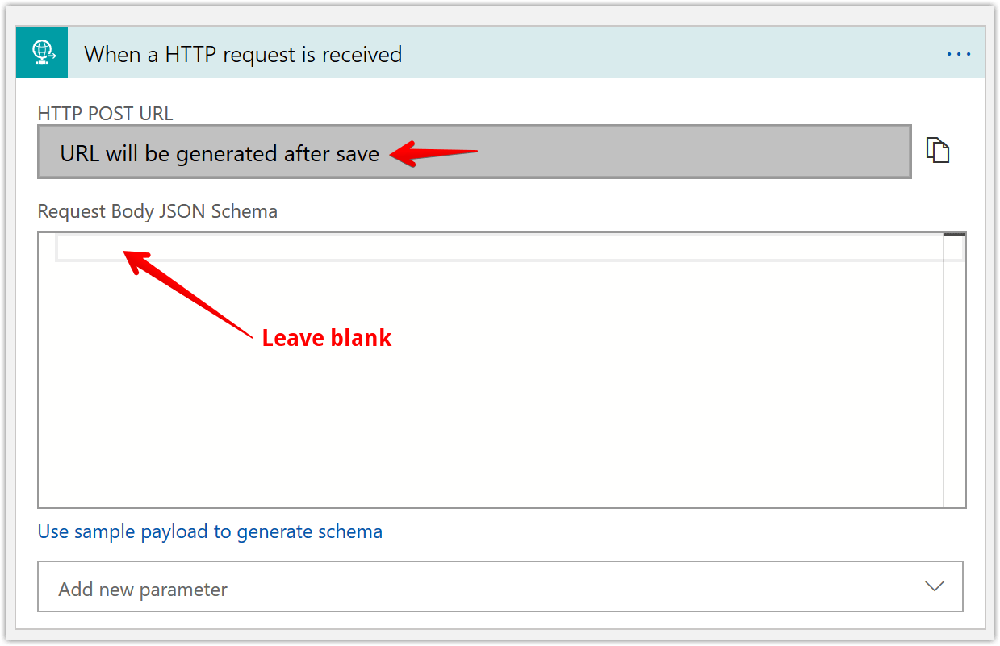
-
Next, we’ll need to get the video indexer account access token so we can get the video index. Add a “Get Account Access Token” step like shown below
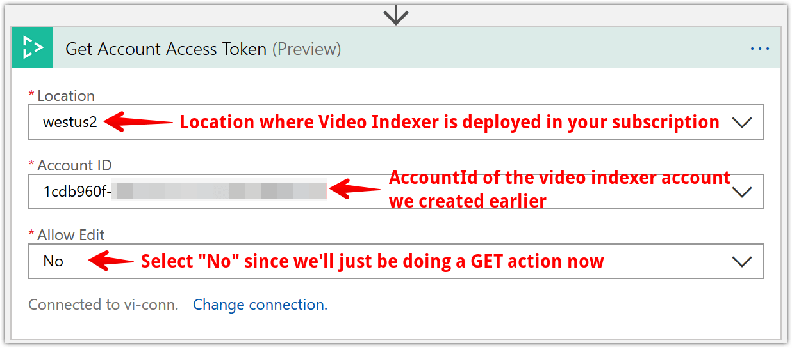
-
Now that we have an access token, we can get the video index. Add a “Get Video Index” step and configure like shown below.
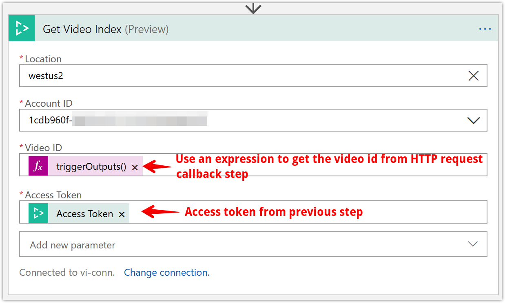
a. The tricky part is the video id field as that is available as “dynamic content” as of this writing. After a bit of trial and error and looking at the output of the “When a HTTP request is received” step, I saw the video id was a field that was returned in the output JSON. Here’s an example output of the HTTP request step
{ "headers": { "Connection": "Keep-Alive", "Host": "prod-19.westus2.logic.azure.com", "Content-Length": "0" }, "queries": { "id": "fcd5b84859", "state": "Processed" } }b. From here, I was able to access the video id with the following expression -
triggerOutputs()['queries']['id']
-
Next, let’s save the retrieved video index to our “insights” file share. To do this add a “Create File” Azure File Storage action. First time you add this action, you’ll need to create a connection like shown below. Key thing to keep in mind is to use the same storage account we created in Part 2 i.e. “serverlessncodermedia”.
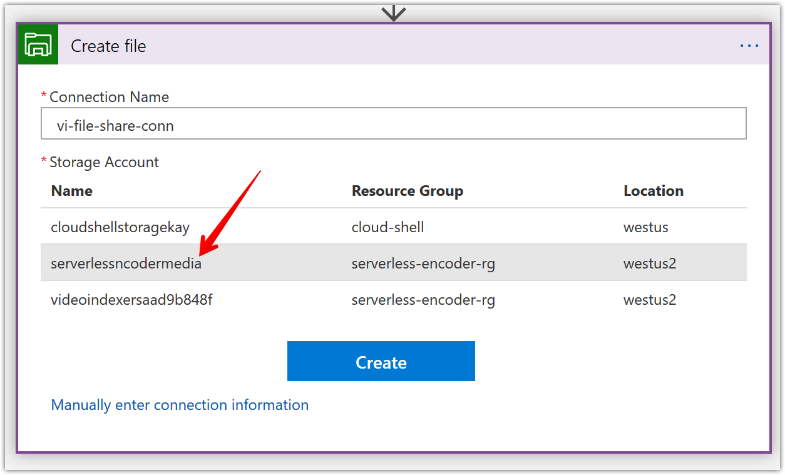
While configuring the “Create file” action, use the following dynamic expressions:
- File name -
concat(body('Get_Video_Index')?['name'], '-insights','.json') - File content -
body('Get_Video_Index')?['videos'][0]['insights']['shots']
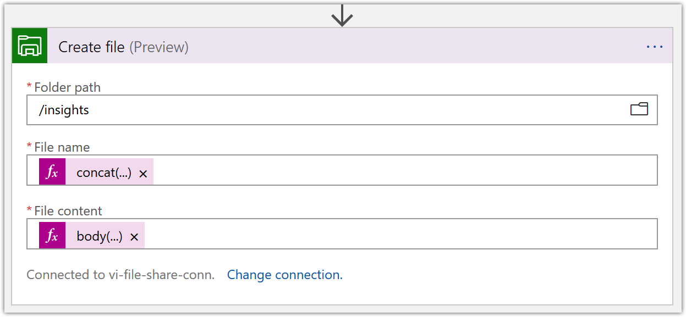
- File name -
-
Now, create a function app in Azure Portal. You can view this tutorial to get started. I named mine “serverless-encoder-functions”. Within this function app, create two functions named “parse-shots” and “ffpmeg-concat” like shown below. The source code (
__init__.pyfile ) for these functions can be found at the link below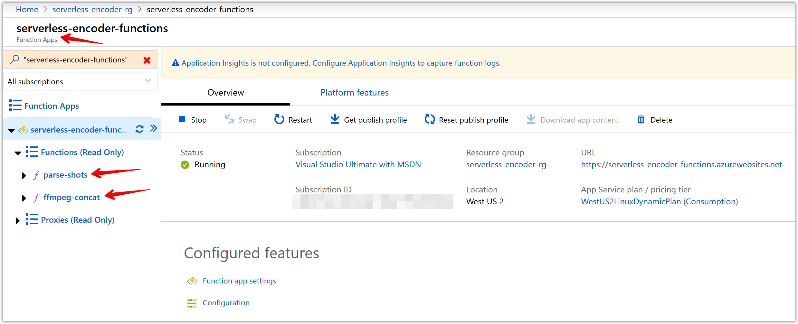
-
Back to our “encoding-logic-app”, add an Azure Functions step and select your function app (mine is “serverless-encoder-functions”) and then the “parse-shots” function as shown below.
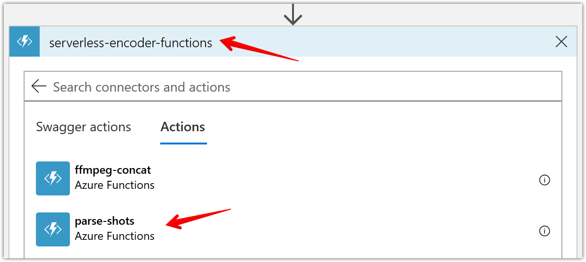
To configure the “parse-shots” function, use the following dynamic expression for “Request Body” parameter to get the actual shots from the returned video index -
body('Get_Video_Index')?['videos'][0]['insights']['shots']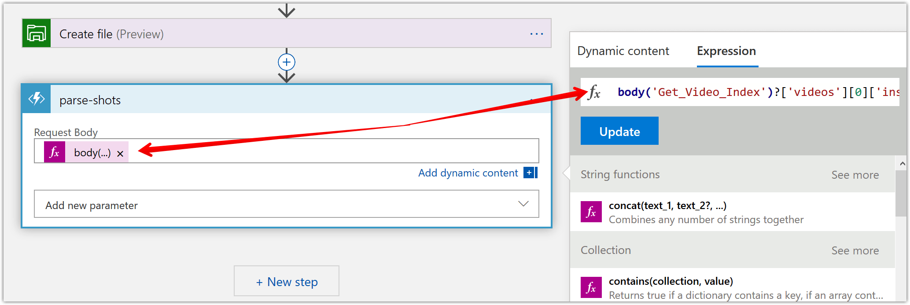
Then, add the needed headers for our function to work correctly like shown below.
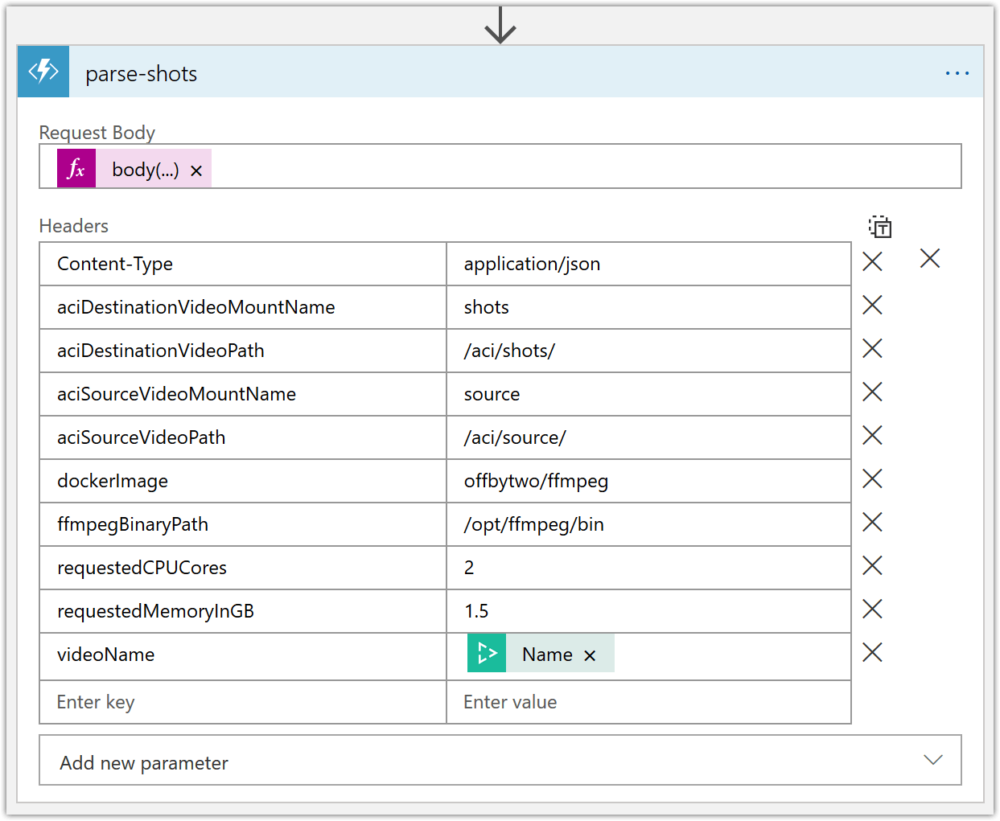
-
Add a for-each loop to create the container instances that will encode the individual shots. Start by consuming the output of the previous azure function step like shown below.
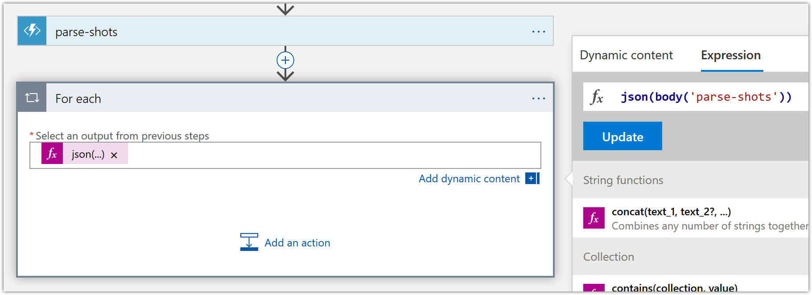
Add an action “Crete Container Group” and configure it like shown below. Some parameters to note are:
- Container Group Name – Use dynamic expression
items('For_each')?['name'] - Containers – Use the dynamic content “Current item” entry for For each. Don’t forget to encase this within array brackets as that’s the expected input by the Azure Container Instance API
- OS Type – Use Linux as the docker image we’re using is Linux based
- Volumes mounted – We’ll mount the “source” and “shots” file share. “source” will be used to read the user uploaded video. “shots” will be used to place the encoded shot video file.

- Container Group Name – Use dynamic expression
-
Now, in the for-each loop we added in previous step, we’ll add an “Until” loop. This loop will need to run until the provisioningState for the previously created container group is “succeeded”. To this “Until” action we’ll add a delay of 1 minute so we limit the number of API calls we make. Then to actually query the provisioningState, we’ll add a “Get properties of a container group” action and use the provisioningState dynamic content of this action as the check statement in the “Until” loop.
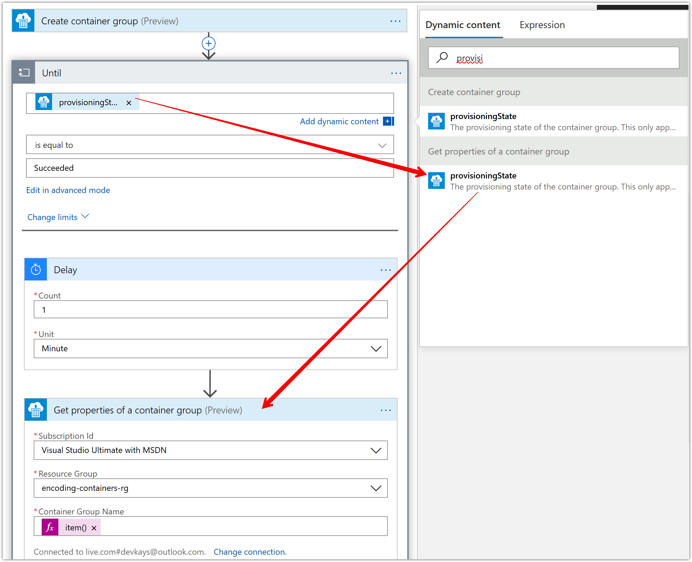
-
Now to terminate the for-each loop, we need to determine if all the container instances have succeeded successfully. This requires us to check if the state of the container group is “succeeded”. For this, we’ll create another “until” action which is mostly similar to the one we added in the previous step. There is a key difference, which is that the “until” loop will check for the state of the container group and not the provisioningState.
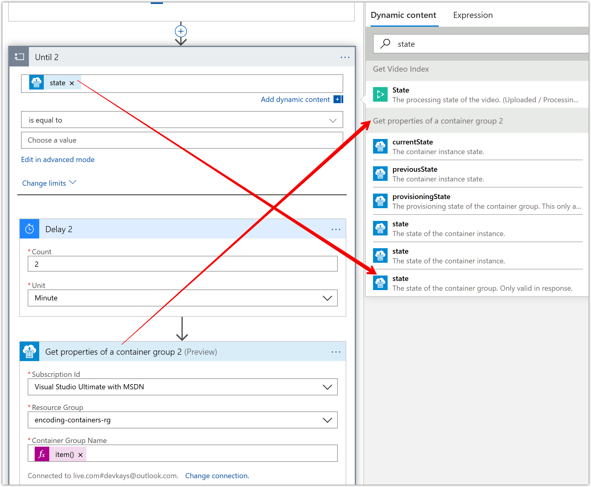
-
Now that the encoding is complete, we can clean up all the container instances that were created. To do this, add a “Delete container group” action and configure like shown below.
- For the “Container Group Name”, use the following expression value -
items('For_each')?['name']
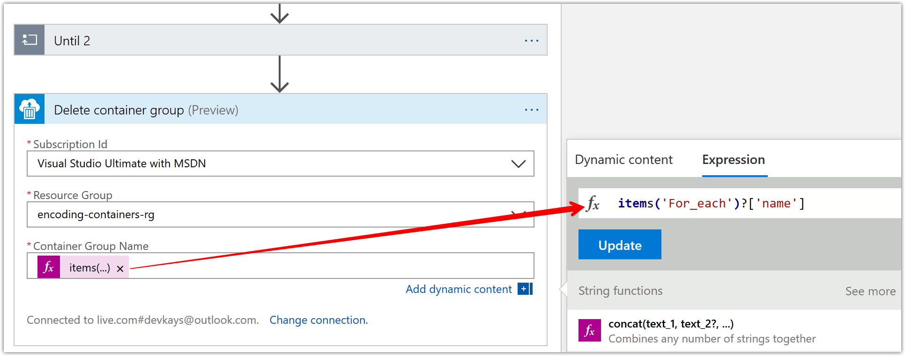
- For the “Container Group Name”, use the following expression value -
-
At the end of the above set of steps, you’re “for-each” action should look like below.

To make sure, we don’t run into Azure Container Instances quota limits, I set concurrency control on the for-each loop to the max allowed of 50 which means at any given time only 50 shots will be encoded concurrently. The concurrency settings can be accessed from the “settings” menu as shown above. Unfortunately, there doesn’t seem to be a way to set a higher limit without turning off concurrency control completely. If you have a high enough Azure Container Instances quota limits, then you don’t need to worry about this.
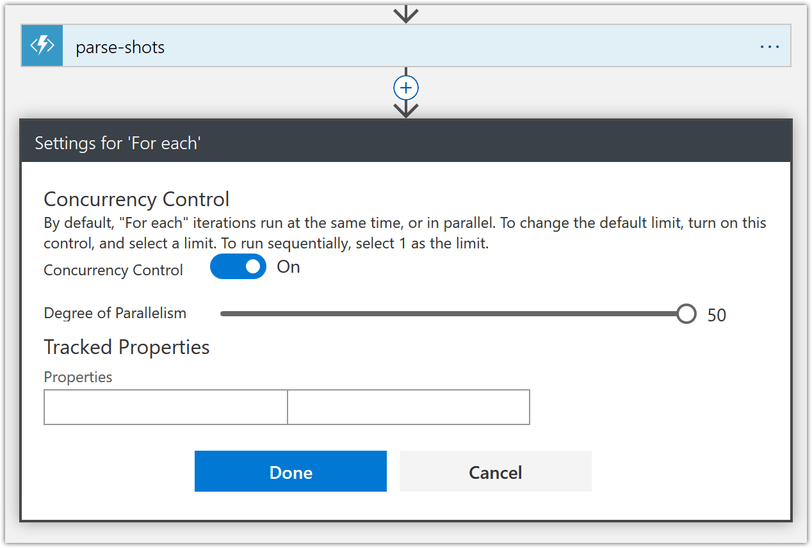
-
Now it’s time to join the individual encoded shot files into the output video. For this we created the “ffmpeg-concat” function before. Let’s add an action to invoke this function and pass in the appropriate header parameters as shown below.
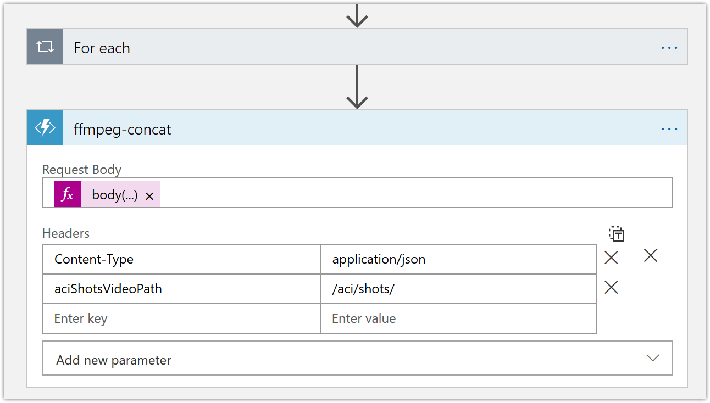
For the “Request Body” parameter, use the expression value -
body('Get_Video_Index')?['videos'][0]['insights']['shots'] -
Next, we’ll save the ffmpeg concat file our “ffmpeg-concat” function generated previously. Us the following expression values.
- File name –
concat(body('Get_Video_Index')?['name'],'-concat','.txt') - File content – Use “body” dynamic content of the previous “ffmpeg-concat” action
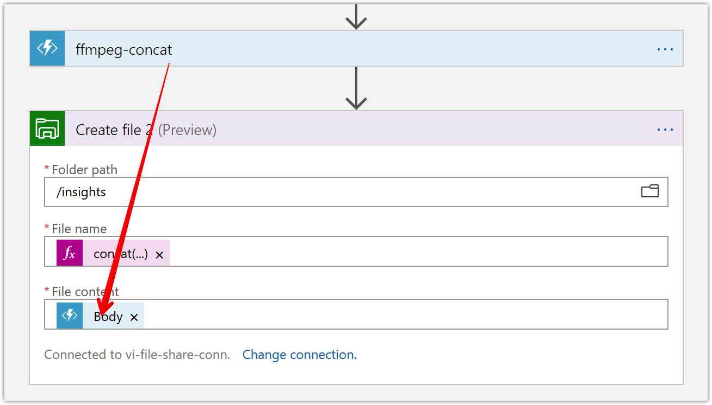
- File name –
-
It’s time to put the individual encoded shots together into a singular video file. To do this we’ll create a container instance like shown below and pass in the requisite commands.
You can use the following JSON definitions
Containers –
[ { "name": "concat-ffmpeg", "properties": { "image": "offbytwo/ffmpeg", "resources": { "requests": { "cpu": 1, "memoryInGB": 0.5 } }, "command": [ "/opt/ffmpeg/bin/ffmpeg", "-f", "concat", "-safe", "0", "-i", "/aci/insights/@{body('Create_file_2')?['Name']}", "-c", "copy", "-y", "/aci/output/@{body('Get_Video_Index')?['name']}-output.mkv" ], "volumeMounts": [ { "mountPath": "/aci/insights/", "name": "insights", "readOnly": true }, { "mountPath": "/aci/shots/", "name": "shots", "readOnly": true }, { "mountPath": "/aci/output/", "name": "output", "readOnly": false } ] } } ]Volumes (don’t forget to first add this additional parameter)
[ { "azureFile": { "readOnly": true, "shareName": "shots", "storageAccountKey": "", "storageAccountName": "serverlessencodermedia" }, "name": "shots" }, { "azureFile": { "readOnly": true, "shareName": "insights", "storageAccountKey": "", "storageAccountName": "serverlessencodermedia" }, "name": "insights" }, { "azureFile": { "readOnly": false, "shareName": "output", "storageAccountKey": "" "storageAccountName": "serverlessencodermedia" }, "name": "output" } ]In the Logic App, this looks like below
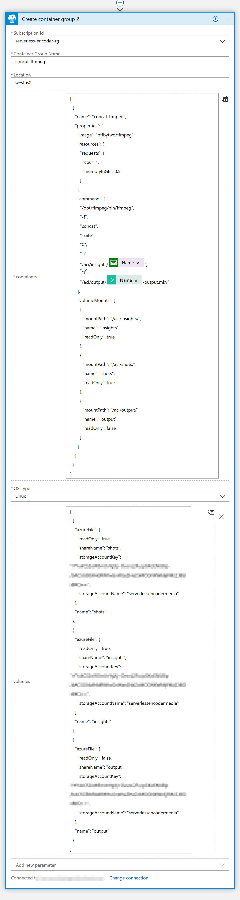
-
Create another until loop and configure it like below. We’ll use this to wait until the merging of the files is done so that we can take another action like sending an email as well as deleting the container group.
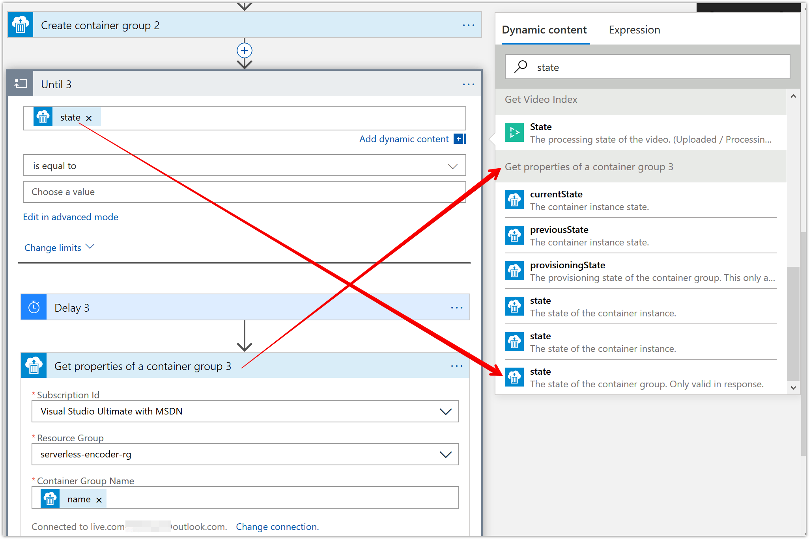 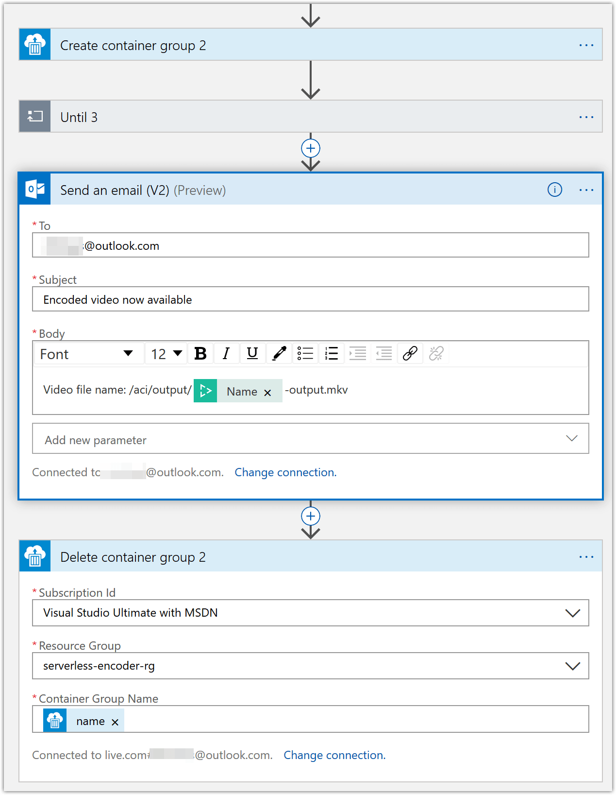
Conclusion
This concludes Part 3. Hopefully, this gives you inspiration to build a similar solution on Azure.
AV1 resources
- AV1 Resource Central: Videos, Tools, Presentations, Comparisons, Research Papers, Encoders, Decoders
- It’s time to replace GIFs with AV1 video!
Contact
Reach out if you have any questions! Feel free to follow me on
- Twitter - @singhkays
- LinkedIn - https://www.linkedin.com/in/singhkays/